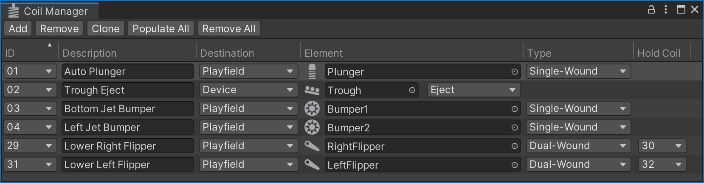

Coil Manager
On a real pinball table most moving parts, including the flippers, are triggered by coils (also called solenoids). In VPE it's the job of the gamelogic engine to trigger them when needed.
Just as the coils are physically wired to the power driver board on a regular machine they can be virtually connected in VPE using the coil manager under Visual Pinball -> Coil Manager.

Setup
Every row in the coil manager corresponds to a logical wire going from a gamelogic engine output to the coil. As with switches, a single coil can be linked to multiple outputs, and an output can be linked to multiple coils.
IDs
The first column, ID shows the name that the gamelogic engine exports for each coil.
Note
As we cannot be 100% sure that the gamelogic engine has accurate data about the coil names, you can also add coil IDs manually, but that should be the exception.
Description
The Description column is optional. If you're setting up a re-creation, you would typically use this for the coil name from the game manual. It's purely for your own benefit, and you can keep this empty if you want.
Destination
The Destination column defines where the element in the following column is located. There are three options:
- Playfield lets you select a game element on the playfield that features the coil
- Device lets you choose a coil device, a mechanism which may include multiple coils, such as a trough.
- Lamp sets the coil to be configured in the lamp manager (see flashers in the lamp manager for more details).
Element
The Element column is where you choose which specifc element in the destination column should be activated. VPE can receive coil events for bumpers, flippers, kickers and plungers and coil devices.
Note
Bumpers are currently hard-wired, i.e. their switch will directly trigger the coil without going through the gamelogic engine. That means they don't need to be configured in the switch or coil manager. VPE will make this configurable in the future.
Runtime
During runtime, you'll see the coil statuses update in real-time. Clicking on the icon manually toggles the coil, which can be handy for debugging.